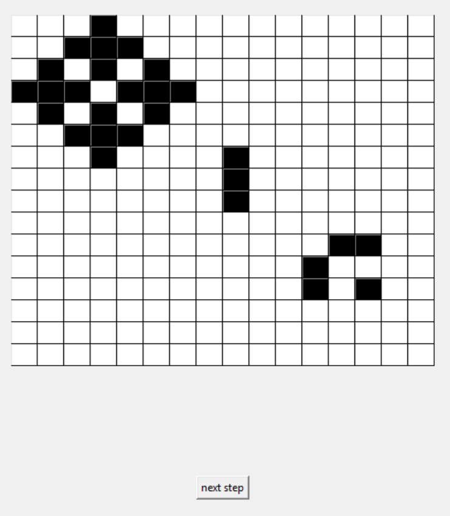
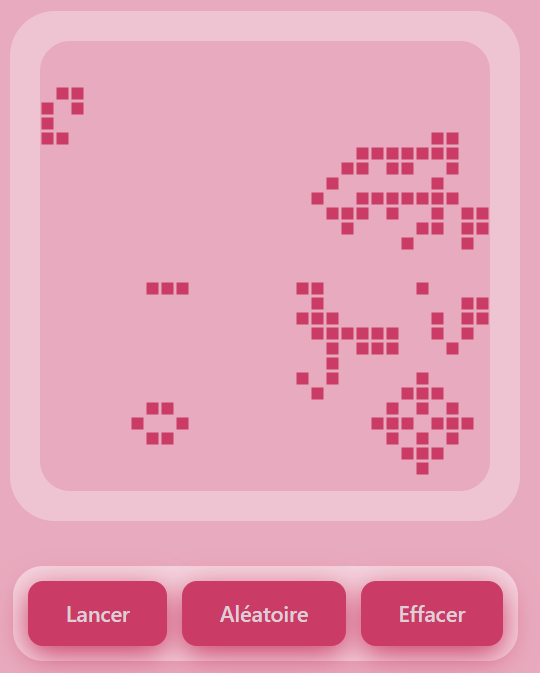

<body></body>
<section>
    <h1>Jeu de la vie (Conway’s Game of Life)</h1>
    <p class="search">
        Ce projet est une implémentation du Jeu de la vie de Conway avec interface graphique
        en Python Tkinter.
    </p>
    <a href="https://github.com/edouard-peyrouty/Jeu-de-la-vie" class="nav-btn btn-github" target="_blank">
        Voir le code source
    </a>
</section>
<div class="grid-container">
    <section class="color-box">
        <h2>Le jeu de la vie c'est quoi ?</h2>
        <p>
            Le Jeu de la vie est un automate cellulaire imaginé par le mathématicien John Conway.
            Il simule l’évolution d’une population de cellules sur une grille bidimensionnelle, 
            où chaque cellule peut être vivante ou morte. À chaque itération, l’état de la 
            grille évolue automatiquement selon des règles simples basées sur le nombre de 
            cellules voisines :
        </p>
        <ul>
            <li>Une cellule vivante survit si elle a 2 ou 3 voisines vivantes</li>
            <li>Une cellule vivante meurt par isolement ou surpopulation sinon</li>
            <li>Une cellule morte devient vivante si elle a exactement 3 voisines vivantes</li>
        </ul>
        <p>
            Malgré la simplicité de ces règles, le système génère des comportements complexes 
            et émergents, illustrant comment des règles locales peuvent produire des dynamiques 
            globales.  
        </p>
    </section>
</div>
<div class="grid-container">
    <section class="color-box">
        <h2>A vous de jouer !</h2>   
        <p>
            Une version interactive HTML/JavaScript reprenant le même algorithme vous permet de 
            dessiner votre propre configuration en cliquant sur les cellules, puis de 
            lancer la simulation.
        </p>             
        <div style="display: flex; flex-direction: column; align-items: center;">
            <canvas id="canvas"></canvas>
            <nav class="controls">
                <a id="btnPlay" class="nav-btn">Pause</a>
                <a id="btnRandom" class="nav-btn">Aléatoire</a>
                <a id="btnClear" class="nav-btn">Effacer</a>
            </nav>
        </div>
    </section>
</div>
<div class="grid-container">
    <section class="color-box">
        <h2>Utilisation</h2>
        <p>
            L'utilisateur peut choisir l'état initial de la grille en cliquant sur les 
            cellules, puis faire avancer la simulation au pas à pas ou bien en continu.
        </p>
        <div style="display: flex; justify-content: space-around;">
            
            
        </div>
    </section>
</div>
<div class="grid-container">
    <section class="color-box last">
        <h2>Technologies et langages utilisés</h2>
        <div class="logos">
            <div></div>
        </div>
    </section>
</div>